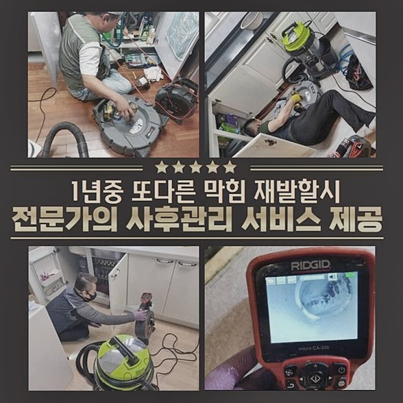
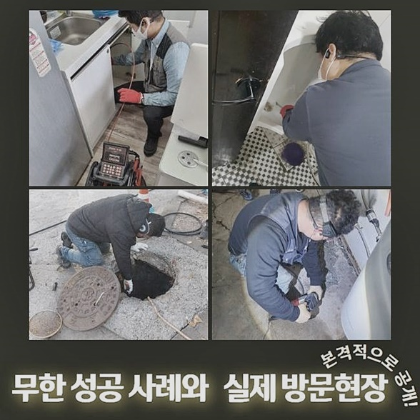
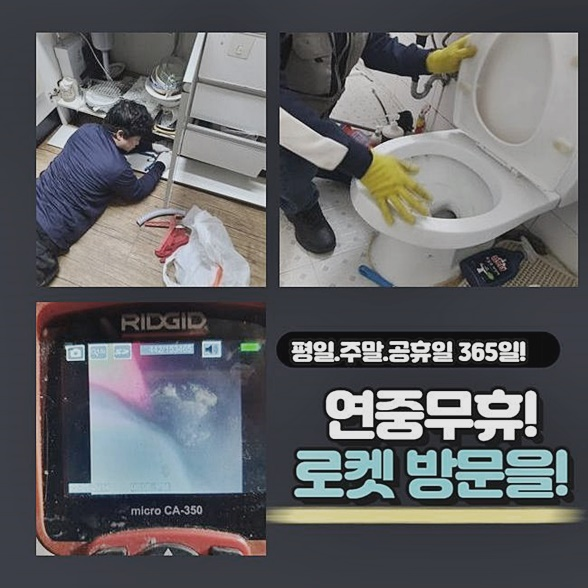
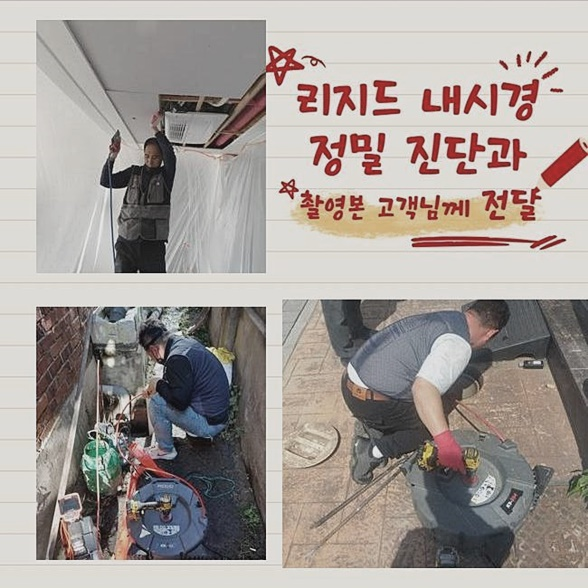
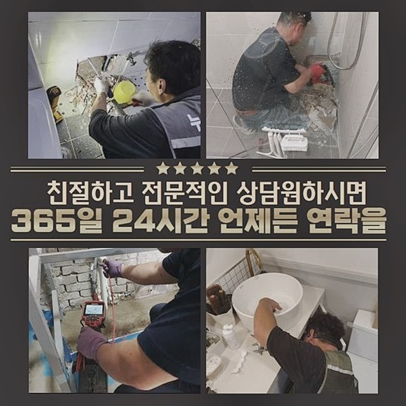
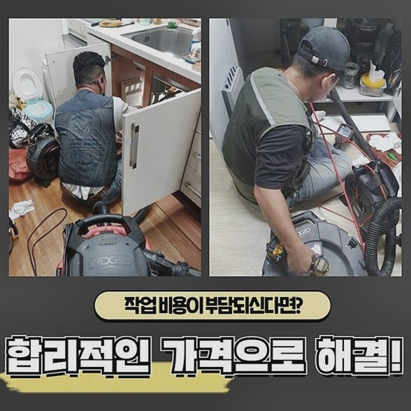
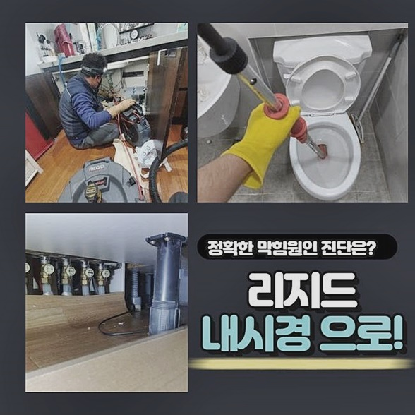

🏠 하남 선동싱크대배수관역류 하사창동 하수관고압세척 누수탐지
용인 싱크대막힘 전문 시공 후기

📋 작업 개요
- 위치: 용인
- 서비스 유형: 싱크대막힘, 하수구막힘, 배관막힘, 누수수리, 역류해결, 뚫는업체, 배관청소, 고압세척
- 작업 일시: 2024. 6. 21. 16:49
- 업체명: 하수구수사대 (010-5615-2118)
🔍 문제 상황
하남 선동싱크대배수관역류 하사창동 하수관고압세척 누수탐지
욕실 및 주방공간 베란다쪽 가정에서 수돗물을 이용해야하는 곳이면 어느곳이나 있는 하수관!
관로가 막히게 될 시 다양한 방면에서 피해들이 참으로 많이 양산될거에요
해당 상황은 보통 머리카락덩어리와 잔해들이 심층부까지 누적되며 발생됩니다
동일하게 화장실공간 일때는 흐름이 빠르게 이뤄지지않아 곤란함을 겪는 사례가 종종 일어나요
지금부턴 문제들을 같이 보면서 유사한 사태에 부딪혔을때 해결할 수 있는 방법들을 말씀드릴게요
일단 거주지에서 배수장애 증세들이 야기되었을땐 간소하게 풀어갈수 없는 사안이기에 전문가와 바로 잡는것이 중요합니다
배수구로 배수되지않는다거나 솟구치는 증상들로 막힌걸 알게되요
문제가 생겼을때에는 허둥지둥 대기보단 신중하게 대처해주셔야 하는데 혹시라도 방치하시면 냄새가 난다거나 하는 피해들이 발발하므로 빨리 대처해주세요
의뢰자께서도 문제를 발견하신 뒤 통수불가를 판단한 덕에 조속하게 저희에게 문의를 주셨었고 재빨리 작업에 착수할 수 있었어요
현장도착 후 검수를 시작했죠 1순위로 통수문제를 진단하기 시작했죠
입구부분에서 오수가 못빠진걸 확인하고 통수도 느린속도로 흘러가는것을 체크하였습니다

🔎 원인 분석
💡 전문가 진단: 정밀 진단 장비를 사용하여 슬러지의 고착 여부를 판명하고 타격/세척 작업을 실시했습니다.
고객님도 아마도 배수구에 잔해가 있어서 막힌것이라 배수구를 청소를 해보셨다고 전해주셨습니다
그렇지만 배수들이 나아질 생각이 없어보였고 각종 용품을 사용해봐도 증세들이 완화되지못한 탓에 저희들을 불렀다고 말씀해주셨는데요
배수가 불가한 곳을 뚫기위해선 어떻게 문제들이 양산된건지 알아야합니다
양상이 가볍거나 부유하는 잔여물이 배수관에 끼어서 막혔을 경우 마트 등에서 살 수 있는 배관전용 용품을 부어주어 별 어려움 없이 원상복구되는 때도 있긴한데요
이와달리 하수관에 유분성분과 석회성분이 쌓이게되어 생기게된다면 기술적인 도구를 이용하여 일련의 과정을 해주는게 옳은 방식이에요
먼저 석션장치를 사용한 다음 오수들을 흡입했어요
석션기기는 압력으로 잔여물을 흡입해주는 장치인데 우리들이 알고계시는 청소기들과 크게 다르지 않다고 보셔도 됩니다
그럼에도 불구하고 오수가 흡입되었을뿐 청소해줘야되는 이물들은 빠져나오질 못해 첫번째로 하수만 흡입하고서 내측을 들여다보아야 했어요
내시경기기를 운용해보았습니다
넣어주니 입구부터 다양하고 상당한 석회질이 보이기 시작했어요
석회는 사용 중에 포함되어있는 칼슘성분들이 반응을 일으켜 야기되는 오염원의 한가지인데요
다른 양상으로 시공이 된지 꽤지난 건축물 구조상 군데군데 이렇게 석회 이물이 누적될 수 밖에 없어요
금일에도 석회때문에 배수에 문제들이 발생하고 통수가 진행되지 못했던 상태였는데 이때는 장비를 씀과 동시에 유화제 용품을 사용하는 것이 중요한데요

🔧 작업 과정
약품을 생각하면 흔히 배관전용 클리너들을 생각하시는 고객님들이 많으세요
주위에서 구할 수 있는 제품만으론 완벽하게 해결하는건 어려운데요
중화제 약품을 가용해야합니다
또한 석회잔해들도 기름슬러지들과 똑같이 기간이 경과함에따라 단단하게 굳는 특성이 있어요
그러므로 방치할 시 막히는 사태가 심해지거나 누수되는 문제도 가속화되게되요
오늘도 굳어진 석회성분들로 통수가 안되는 현장이라 제대로 된 해결들을 돕기위해 중화제를 이용해주었는데요
하수는 석션 일련의 과정을 통해 제거해주고 전용 용품을 부어 석회성분을 유화시키는 일련의 과정을 시작했는데요
이렇게 유화제를 써주어 굳어진 이물을 흐물거리게하는 과정들을 이행하여 수월하게 안쪽부분을 청소하는것이죠
해당 과정으로 석회들을 유화해주고서는 바로 플렉스 샤프트를 써주어 벽측에 붙어있는 이물들까지 세척해요
물이 빠져나가는 배관에 축적된 잔여물은 샤프트 장비를 써주어 구석구석 청소해주셔야 욕실의 설비를 사용하며 머리카락이라던지 여타 이물이 무리없이 메인관으로 빠르게 배출됩니다
또한 동시에 석회들도 무리없이 제거시킬 수 있어요
제거된 이물은 안으로 가라앉지않도록 이전에 흡입시켰던 석션도구로 흡입 일련의 과정을 실시해요
그렇다면 오하수들은 석션기기와 부착된 바구니로 이물과 석회들이 담기기에 안측에 들어가질 않아요
최종적으로 깨끗히 정리하는 작업이죠
스케일링 각 작업들을 가용해주어 꼼꼼하게 청소를 끝맺었습니다
석회들은 수돗물을 이용해야하는 공간일 시 장소불문하고 야기되죠
때문에 하수도를 잘 들여다보고 주의력을 가지고 문제발생을 최소화하는게 1순위인걸 잊지않기를 바랍니다
세척이 끝났으면 통수가 잘 이뤄지는지 테스트과정을 실시했죠
다행스럽게도 하수가 시원하게 무리없이 흐르는걸 보았습니다
의뢰자도 불편이 깨끗하게 바로 잡히니 마침내 전문가인 저희께 감사인사까지 해주시어 저희전문진도 만족하며 철수할 수 있었어요


✅ 작업 완료
이렇게 수월한 수도이용만큼 무시할 수 없는것이 청결시되는 것이죠
계속해서 강조드려도 과하지않듯이 귀찮으셔도 정기적으로 관리하시면 별다른 문제상황이 벌어지지않고 지내실 수 있어요
마찬가지로 동일증상이 불거지면 허둥지둥 대기보단, 오늘의 사항들을 보시고서 깨끗하게 욕실을 유지하시기를 부탁드립니다
한시간을 넘기지않고 지역적 한계없이 방문해드리니 편하게 연락주시면 신속하게 도와드릴게요!
수도사용이 제한되는 상황들! 방치는 금물! 저희의 전문가들과 해결해봅시다!




⚠️ 베란다 누수 및 방수 관리 방법
- ✅ 비가 많이 올 때 창틀 주변이나 아래층 천장에 얼룩이 생기는지 정기적으로 확인해 보세요.
- ✅ 우수관 주변 실리콘 마감이 들뜨거나 깨진 틈새가 있는지 손상 여부를 수시로 체크하세요.
- ✅ 베란다 바닥 타일의 줄눈(메지)이 소실되면 그 틈으로 물이 침투하여 누수가 유발됩니다.
- ✅ 누수 의심 증상 발견 시 방치하면 아래층 손실이 커지므로 즉시 전문가의 진단을 받으십시오.
💡 핵심 정리
- 확실한 장비 작업(내시경 점검 및 샤프트 스케일링)으로 원인을 뿌리 뽑습니다.
- 작업 후 1년 이내에 동일한 부위 재발 시 100% 무상 A/S 서비스를 보장합니다.
- 서울 · 경기 · 인천 전 지역에 24시간 언제든 긴급 출동할 수 있도록 항시 대기 중입니다.
❓ 자주 묻는 질문 (FAQ)
🚨 용인 싱크대막힘 문제로 고민이신가요?
정확한 원인 진단과 확실한 시공으로 재발 없는 해결을 약속드립니다.
24시간 긴급 출동 | 서울 · 경기 · 인천 전지역 | 1년 내 재발 시 무상 A/S